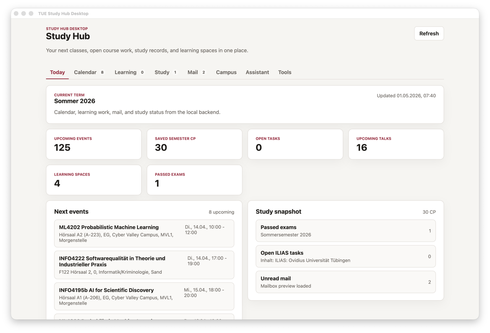

Desktop app
Download Study Hub for your computer.
A local desktop app for University of Tuebingen study data: timetable, learning spaces, mail, campus information, and course discovery in one place.

Installers
Available platforms
Before the app is signed
Early macOS builds may be blocked because they are not signed and notarized yet. This is expected for local development releases. Use only installers published from this repository.